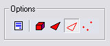

UDN
Search public documentation:
EditorButtonsJP
English Translation
中国翻译
한국어
Interested in the Unreal Engine?
Visit the Unreal Technology site.
Looking for jobs and company info?
Check out the Epic games site.
Questions about support via UDN?
Contact the UDN Staff
中国翻译
한국어
Interested in the Unreal Engine?
Visit the Unreal Technology site.
Looking for jobs and company info?
Check out the Epic games site.
Questions about support via UDN?
Contact the UDN Staff
エディタボタンの参照
ドキュメントの概要:UnrealEd 3.0 の基本的な使用方法とキーボードのショートカットの参照 ドキュメントの変更ログ: Mike Fricker により管理。クイック リファレンス カード
エディタで使用するボタンの数々についての簡潔な概要は こちら をご覧下さい。エディタの基本的な使用方法
エディタ機能の説明には、次のような表現形式を使います→ キーボードのボタンを押したまま（必要に応じ）＋マウスボタンを押し＋マウスを方向に移動します。 マウスボタンには左 （LMB）、真中 （MMB）、そして右 （RMB） があります。マウスの移動方向は、全方向、左、右、上、下です｡すべてのビューポート モード（3D、XY、YZ、XZ ビュー）
- LMB （マウスポインタがアクタ上で） | アクタを選択
- LMB ダブルクリック または F4 （アクタ上にいる場合） | アクタ プロパティ メニューを開く
- RMB | コンテクスト メニューを開く
- Shift-D または Ctrl-W | 選択オブジェクトの複写
オブジェクトが選択されている場合
- Del | 現在のオブジェクトを削除
- LMB （何かの上にマウスポインタがない場合） | 現在のオブジェクトの選択解除
- Shift ＋ 動作ウィジェットと共にアクタをドラッグ | アクタの移動中にビューポートを移動
- スペース バー | xyz 動作ウィジェット（標準）、回転ウィジェット、フリースケーリング ウィジェットを順に循環選択
- Alt ＋ 動作ウィジェットと共にアクタをドラッグ | 選択アクタを複製して移動
- RMB （ブラシ頂点で）| ブラシの原点を選択された頂点に変更
- Home | すべてのビューポート カメラを選択アクタに合わせる
- Shift ＋ Home | 選択アクタに有効なビューポート カメラのみを合わせる
- End | 選択されたアクタをフロアへスナップ
- Ctrl + End | 選択したアクタをグリッドラインに戻す
- Ctrl-G | 現在選択されているアクタと同じグループに属するすべてのアクタを選択
- Alt ＋ カーソル キー | 選択されたアクタ（複数も可）の位置を少しずつ移動
- M | 選択されたアクタのレベルをカレントにする
- Ctrl + M | 選択したアクタを現在のレベルに移動します。
- (new) Ctrl + K | 選択したアクタを Kismet で見つける
- (new) Ctrl + Shift + A | 現在選択されているアクタと同じクラスのアクタをすべて選択。 注意 Trillian などの IM プログラムは、このようなショートカットを妨害して競合する可能性があります。
- (new) Ctrl + B | 現在選択されているアクタを Generic ブラウザで同期させる
- (new) Escape | すべての選択を解除し、開いているアクタ プロパティウィンドウをすべて閉じる
ブラシ固有ビルダ
- Ctrl ＋ A | ブラシを加算する
- Ctrl ＋ S | ブラシを減算する
- Ctrl ＋ I | ブラシを交差
- Ctr ＋ D | ブラシを非交差
正射投影法のビューポート（XY、YZ、XZ ビュー）
- LMB （BSP ブラシのエッジ上で） | BSP ブラシを選択
- Ctrl ＋ Alt ＋ LMB | ボックスを選択
- LMB または RMB ＋ 任意のキー | マウスの移動方向にカメラを移動
- MMB ＋ 任意のキー | ゲーム ユニットで距離を測定
- LMB & RMB ＋ 上/下 | ズーム イン/アウト
- Ctrl ＋ MMB | すべてのカメラの位置を現在のカメラに合わせる
- (new) Alt + MMB | クリックした場所にピボットをスナップする。 すべての選択や、クリックしようとしているものすべてを無視する。
オブジェクトが選択されている場合
- Ctrl ＋ LMB ＋ 任意のキー | 選択されたオブジェクトを移動
- Ctrl ＋ Shift ＋ LMB ＋ 任意のキー | 選択されたオブジェクトとビューポート カメラを移動
- Ctrl ＋ RMB ＋ 任意のキー | 選択されたオブジェクトを自由に回転
- カーソル キー | 選択されたアクタ（複数も可）の位置を少しずつ移動
非正射投影法 ビューポート（3D ビュー）
- LMB ＋ 任意のキー | 横移動（左/右）、前後移動(上／下)
- RMB ＋ 任意のキー | カメラを自由に移動
- LMB & RMB ＋ 任意のキー | カメラをゆっくりと上下に移動（Z 軸）または左右（相対 X 軸に沿って）
- LMB (BSP ブラシ上) | ブラシ サーフェスを選択
- Ctrl ＋ Shift ＋ LMB (BSP ブラシ上で) | BSP ブラシを選択
- Alt ＋ RMB (ブラシ フェース上にマウスポインタ）| 「テクスチャ クリップボード」 へサーフェス テクスチャをコピー
- Alt ＋ LMB (ブラシ フェース上にマウスポインタ) | サーフェスへテクスチャを貼り付ける
- Shift ＋ Alt ＋ LMB (ブラシ フェース上で) | 複数選択したブラシ サーフェスにテクスチャを貼り付ける
- Ctrl ＋ Alt ＋ LMB (ブラシ フェース上で) | テクスチャとテクスチャ座標をサーフェスに貼り付け
- カーソル キー | カメラ位置を少しずつ移動
ブラシ サーフェスが選択されている場合
- Shift ＋ B | ブラシ 上のすべてのサーフェスを選択
- Shift ＋ S | レベル内のすべてのブラシ サーフェス を選択
- Shift ＋ Q | 現在選択されているもの以外のすべてのブラシ サーフェスを選択
- Shift ＋ J | すべての 隣接 サーフェスを選択
- Shift ＋ W | すべての隣接 ウォール サーフェスを選択
- Shift ＋ T | テクスチャ が同じすべてのサーフェスを選択
- Shift ＋ N | すべてのサーフェスを選択解除（ 何も 選択しません）
- (new) Ctrl + Shift + F | 選択したサーフェスのポリゴンの上に (UVs のタイリングなしで) テクスチャを「合わせて」取り付ける
テレイン編集固有キー
(new) テレイン編集には、編集している円の半径を動的に調整できる便利な機能がついてきます。 テレインをペイント中に、 Shift または Alt を押し続け、マウスの真ん中にあるボタンで半径を調節します。ジオメトリ モード上の言語
ジオメトリ モードは、 UnrealEd 3.0 で BSP ジオメトリを編集するための新しく使いやすい機能です｡これからこの機能について簡単にご説明します｡ はじめに、ブラシ上を 2D ビューポート内でクリックするか、3d ビューポート内で [Ctrl + Shift] でクリックして選択します｡次に、透明のキューブ ボタンをクリックするか、キーボードで [Shift + 2] を押してジオメトリ モードを選択します｡ メニューの上部近くに新しいオプションが表示されているはずです｡これはジオメトリ編集のオプションで、多くの一般的な 3D モデリング プログラムにも似たような機能があります。:
メニューの上部近くに新しいオプションが表示されているはずです｡これはジオメトリ編集のオプションで、多くの一般的な 3D モデリング プログラムにも似たような機能があります。:

- Toggle Modifier Window(モディファイヤ ウィンドウをトグル) | いくつかのコンテキスト依存型オプションを持つウィンドウを表示します。
- Object(オブジェクト) | ブラシのすべてのサーフェスを選択し、これによりジオメトリ モードのままでオブジェクト全体を手早く移動したり縮小したり出来ます｡
- Poly(ポリ) | ひとつまたはそれ以上のポリゴンブラシ サーフェスを修正できます｡ブラシのシェイプまたはサイズを手早く変えたい場合に使います｡
- Edge(エッジ) | ひとつまたはそれ以上のポリゴンブラシのエッジを修正できます｡
- Vertex(頂点) | 頂点ジオメトリ編集により頂点の作成が可能｡これは最も強力な編集モードで、頂点をひとつずつ扱って BSP ブラシを編集できます｡
レンダリング モード
- Alt ＋ 1 | ブラシのワイヤフレーム レンダリング モード
- Alt ＋ 2 | ワイヤフレーム レンダリング モード
- Alt ＋ 3 | Unlit レンダリング モード
- Alt ＋ 4 | lit レンダリング モード
- Alt ＋ 5 | ライティングのみレンダリング モード
- Alt ＋ 6 | 複合ライティング レンダリング モード
エディタ モード
- Shift ＋ 1 | カメラ モード - デフォルト エディタ モード
- Shift ＋ 2 | ジオメトリ モード - BSP ブラシを編集
- Shift ＋ 3 | テレイン モード - テレインの作成および操作
- Shift ＋ 4 | テクスチャ パニング モード - BSP ブラシ上にテクスチャを正確に合わせるため、サーフェス プロパティを組み合わせて使用
カメラ ブックマーク
- Ctrl + 数字 | 現在のカメラ位置をブックマークする
- 数字 | 特定のブックマーク位置にカメラを移動
Maya カメラ ツール
Maya のカメラ動作ツールのエミュレーションが今回追加されました｡ これらの機能を起動するには、[U] または [L] をキーボードで押し続けます｡ [U] はカメラ機能を中心にしてビューポートの真中に配置し、[L] はカメラ機能を中心にして選択されたアクタの真中に配置します｡ これらのコントロールは、メイン パースペクティブ ビューポート、StaticMesh エディタ、AnimSet ビューア、AnimTree ビューア、Cascade、および PhAT など、エディタのほとんどのエリアで使用可能です｡- LMB ＋ 任意のキー | 選択されたアクタまたはビューの周囲を回る
- MMB ＋ 任意のキー | カメラのパン
- RMB ＋ 下 | カメラのズームアウト
- RMB ＋ 上 | カメラのズームイン
上級ショートカット キー
これらは使用頻度は低いですが、便利なショートカット キーです｡- A ＋ LMB | アクタ ブラウザ メニューから現在選択されているアクタを追加
- B | ビルダ ブラシをオン/オフでトグル
- C | 衝突シリンダをオン/オフでトグル
- D | ビューポート リアルタイム モードをオン/オフでトグル
- D ＋ LMB | 汎用ブラウザでマテリアルが選択された状態で、ワールドにそのマテリアルを Decal として配置
- E | Decal をオン/オフでトグル
- F | フォグをオン/オフでトグル
- G | ゲームでプレイ中に非表示のものすべてをトグルする
- H | [Show BSP and lighting only] (BSP とライティングのみを表示) モードをトグル
- K | Kismet リファレンス ボックスをトグル オン/オフする
- L ＋ LMB | ライト アクタを選択した場所に配置
- N | ナビゲーション ノードをオン/オフでトグル
- O | ボリュームをオン/オフでトグル
- Q | BSP をオン/オフでトグル
- R | ライト/オーディオ範囲の視覚化をオン/オフでトグル
- S ＋ LMB | 汎用ブラウザで静的メッシュが選択された状態で、ワールドにそのメッシュを配置
- T | テレインをオン/オフでトグル
- W | 静的および骨格メッシュをオン/オフでトグル
- Ctrl ＋ P | 選択されたポリゴンをビルダ ブラシにコピー
- Ctrl ＋ R | リアルタイム ビューポート更新をトグル
- Shift ＋ A | すべてを選択
- F4 | アクタ プロパティをビュー表示
- F5 | サーフェス プロパティをビュー表示
- Mousewheel | 選択したビューポートをズームイン/アウト
- . ＋ LMB | パスノードを選択した場所に配置
- . ＋ LMB | パスノードを選択した場所に配置
- [ | グリッド サイズを小さくする
- ] | グリッド サイズを大きくする
- (new) ~ | 「World」 と 「Local」間でウィジット座標フレームをトグルする
その他のヒント
- (new) [F9] を押しながらビューポートを左クリックすると、そのビューポートのスクリーンショットが撮れます｡ この方法でどのようなエディタ ビューポートでもキャプチャできます（ Matinee 、マテリアル ブラウザ、レベル ビューポートなど）。
- スケーリング ツールを使って、ライトのサイズ/半径、 Decal およびインパルス アクタを修正できるようになりました｡
- スポットライトをスケーリング ツールを使って修正する場合、ライトをスケーリングすると通常ライトの半径に影響します｡Ctrl＋スケールにより外角が変わり、Alt＋スケールにより内角が変わります｡
- スケーリング ツールを使ってアンビエント サウンドの半径を修正できるようになりました｡スケーリングにより最大半径をコントロールし、Ctrl＋スケールにより最小半径をコントロールします｡
- AmbientSoundSimpleアクタを配置できるようになりました｡汎用ブラウザからサウンド ウェーブを選び、ワールド内で右クリックをして、[アクタを追加 -> AmbientSoundSimpleを追加] を選択します｡
- どのエディタ プロパティ ウィンドウでも、プロパティ ウィンドウのアイテムをマウスの右ボタンでクリックするとすべてのアイテムがウィンドウ内で拡大されます｡
- (new) エディタ プロパティ ウィンドウにある プロパティを [Shift] - クリックでマークする。 次に右クリックし、一致しているプロパティ値のアクタすべてを選択するため、「プロパティにより選択」を選択する。 同様に、「プロパティ配色」ビューモードは、一致しているアクタに赤で配色する。
* UE3_Shortcuts.doc :UE3 エディタのショートカットに関するリファレンス カード